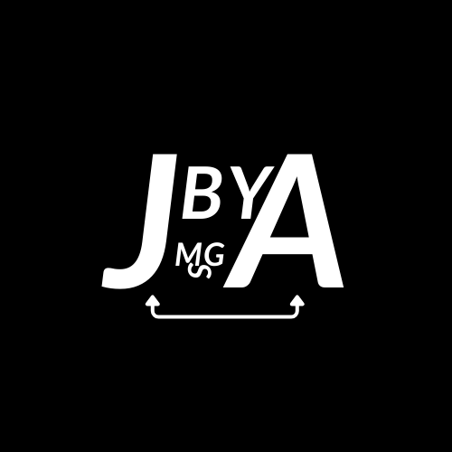

José Alberto's page
Sobre Mim:
Sou brasileiro, nascido em Paudalho, uma cidade do interior de Pernambuco. Desde criança sempre gostei de sonhar com meu futuro: emprego, família, sucesso... No início, tinha um sonho de ser veterinário, pois sempre gostei dos animais, mas convenhamos..., não sou corajoso e forte como um médico ou veterinário. Em outro momento da minha vida , sonhei igual a todo menino do Brasil... quis ser jogador de futebol, mas esse é um sonho que poucos conseguem realizar. Então por muito tempo, durante minha adolescência, eu não sabia o que queria ser até que um dos meus melhores amigos instalou um software de criação de jogos em seu computador. Embora meu primeiro contato com a programação não tivesse sido tão bom, foi assim que eu decidi que quero ser programador.
Porque gosto de progamação?
Eu sempre gostei de criar coisas e, quando era criança, descobri num jogo minecraft os circuitos de redstone e passava horas fazendo portas e criando circuitos. Um pouco depois, comecei a acompanhar o canal de um youtuber, o Viniccius13, e minha mente explodiu para o minecraft. Entretanto, quando entrei no ensino médio tirei notas baixas em física e química porque eu estava desfocado demais... estava apaixonado…, mas no meu último ano na escola percebi o quanto gostava de física e vi o quanto a matemática para criação, é incrível! A partir de então fiquei muito focado em programação e xadrez.
Meu portifólio:
Este portfólio tem por finalidade publicar os meus projetos e estudos na intenção de em algum momento chamar atenção de uma empresa e, consequentemente, conseguir meu tão sonhado emprego.